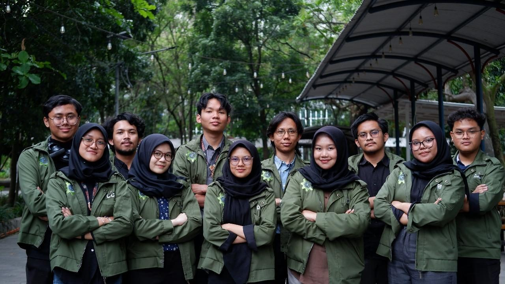
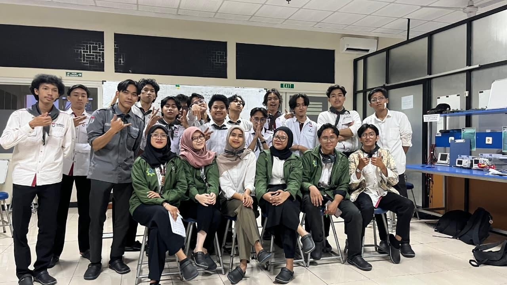
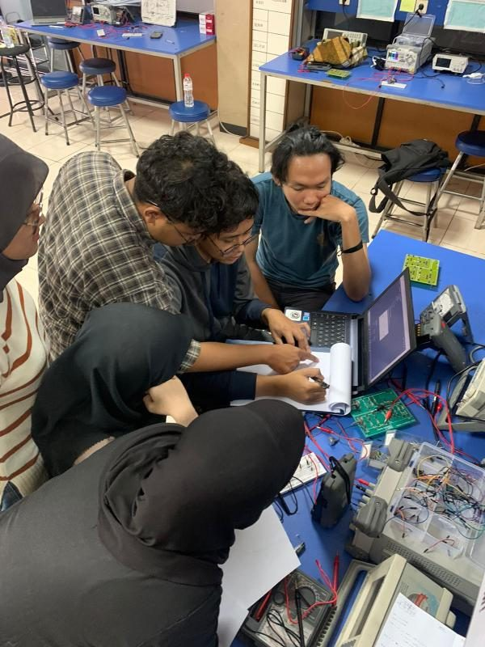

Work Experience
Teaching Assistant — Electrical Circuits and Electronics



About the Instrumentation System Laboratory
The Instrumentation System Laboratory is a laboratory at Telkom University where basic electrical and electronics practicums are held for Engineering Physics students and related programs.
What I did
- Taught series/parallel circuits, Thevenin/Norton, node/mesh analysis and passive filters; assisted circuit troubleshooting and measurement interpretation using DC power supplies, oscilloscopes and function generators.
- Taught Basic Electronics practicals covering diode, BJT, MOSFET and op-amp circuits.
- Taught Digital Electronics: logic gates, Boolean/Karnaugh maps, encoders/decoders, multiplexers/demultiplexers, seven-segment displays, flip-flops, multivibrators and counters.
- Served on the Practicum Division, revising modules and preparing laboratory materials.
Practicum scope
I taught three practicums — Electrical Circuits, Basic Electronics, and Digital Electronics — mentoring a total of 190 students over a 1 year 2 month contract (Jun 2024 – Jul 2025), and helped complete the entire practicum series for the 2023 cohort.
Before every practicum session, I took part in Training of Trainers (ToT), a rehearsal session for assistants to make sure the material was delivered to students consistently.